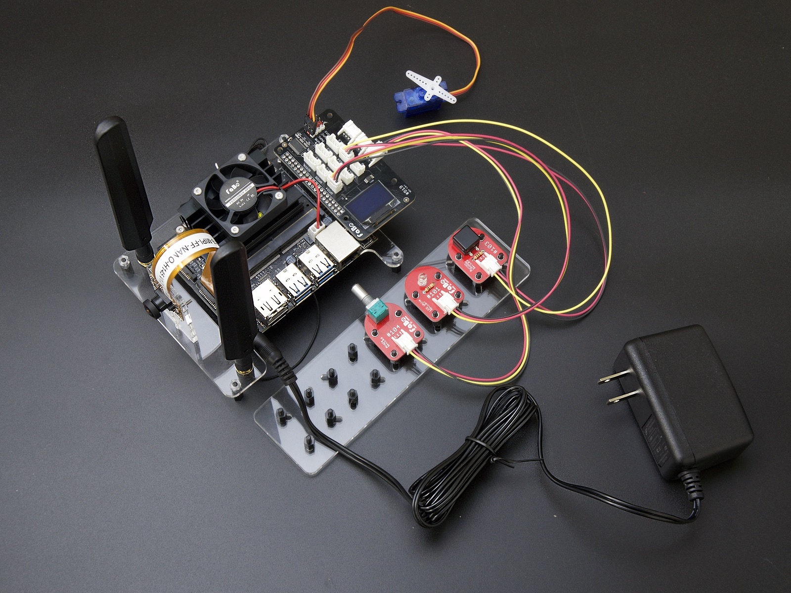
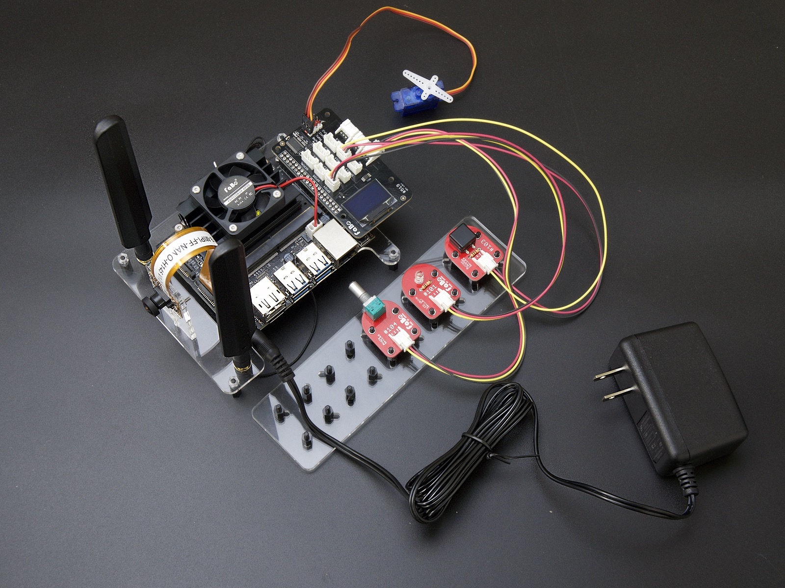

FaBo EdgeAI Docs

FaBo EdgeAI Docsについて
FaBo EdgeAI Kit(Jetson Nano使用)に関するドキュメントです。
修正依頼等
GithubのRepoにIssuesをあげてください。
サポート Discord
本ドキュメントでのセミナーの実施
- 2019年8月20日 会津大学シリコンバレー研修(FaBo主催)(8名)

FaBo EdgeAI Kit(Jetson Nano使用)に関するドキュメントです。
GithubのRepoにIssuesをあげてください。